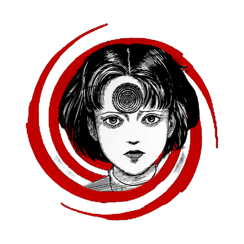

Junji Ito’s career in horror manga really took off in the mid-’80s when he submitted a horror short story to a magazine called Monthly Halloween. That story was later serialized as Tomie, a manga that would end up running for 13 years. Inspired by the tragic death of one of his classmates, Ito wrote Tomie to explore death and mortality. “It just felt so odd to me that a classmate who was so full of life should suddenly disappear from the world,” Ito told Grape. “And I had the strange feeling that he would show up again innocently. Ever since then, I wanted to give expression to that feeling in my manga.” Tomie would go on to win the Kazuo Umezu Prize in 1989 and was later adapted into a series of horror films from between 1999 and 2011.